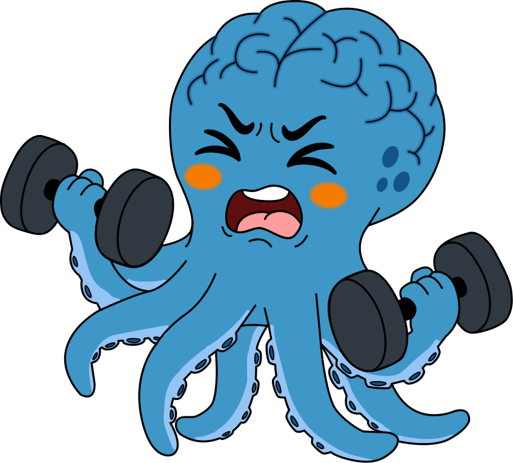

Programa Adulto Vital · 65+ años
Una línea distinta: proteger, no desarrollar
Las 4 fases anteriores entrenan funciones que todavía están madurando. Programa Adulto Vital protege y mantiene funciones que ya existen, para retrasar su deterioro.

Cómo es una sesión
1 sesión por semana, 60 minutos, con 3 actividades que combinan movimiento y reto mental al mismo tiempo (por ejemplo, caminar sobre una línea mientras se resuelve una serie numérica). Se calibra por nivel de capacidad funcional observada, nunca solo por la edad.
Por qué combinamos cuerpo y mente
Varios metaanálisis con adultos mayores encuentran que combinar ejercicio físico con un reto cognitivo simultáneo mejora la función ejecutiva y el estado de ánimo más que el ejercicio o el reto mental por separado. El componente físico no es solo motivación: parece ser parte de cómo se produce el beneficio.
Sobre el bilingüismo, si ya hablas un segundo idioma
Estudios de seguimiento poblacional han encontrado que las personas que usan activamente un segundo idioma durante la vejez muestran síntomas de deterioro cognitivo, en promedio, varios años más tarde que quienes no lo hacen. Si ya dominas otro idioma, lo integramos en el circuito para mantenerlo activo. Esto es distinto a aprender un idioma nuevo en la vejez, donde la evidencia todavía es preliminar — lo ofrecemos como estimulación valiosa, sin prometer el mismo efecto.
Lo que no prometemos
Programa Adulto Vital no previene ni cura el Alzheimer ni ninguna otra condición. La evidencia respalda retraso de síntomas y mantenimiento de función, como tendencia poblacional — nunca como garantía individual. Si tu familiar ha pasado por un proceso de salud delicado, cuéntanoslo directamente por WhatsApp para orientarte con honestidad sobre si el programa es adecuado.